STAY · 待確認
住宿待確認
酒店尚未確定。確認後將補充準確地址、交通定位和精確物業圖片。
FUKUOKA · 2026
以福岡市區為基地，串起海岸自駕、別府近郊、秋月紅葉與門司港街景。
福岡的行程、住宿、餐飲與出發準備，都可以從這里繼續。
TRANSPORT
補充具體航班、車次、日期、機場或車站後，本頁會同步更新全部交通卡與說明。
THE ROUTE
IT240 抵達福岡兩人預計 10:00 抵達福岡機場。預留入境、行李及市區移動時間，約中午再開始活動；先處理寄放行李／入住安排，細節依藥院前住宿規則。
下午天神與博多運河城先逛天神地下街，留出咖啡、午餐與休息空檔，再到博多運河城看建築中庭、選物與商店；不需趕著把整座商場逛完。15:30 左右收尾，回藥院前休息並等另一組抵達。
晚上JX840 會合・一蘭晚餐三人預計 18:00 抵達福岡機場，實際入境時間依當日狀況。五人會合後再前往一蘭天神西通店，將晚餐安排在約 20:30；若航班或入境延誤，先以會合和簡餐為優先。
本日只有兩人白天抵達、五人晚間會合；航班到市區及住宿的實際移動依入境、行李與訂單安排，圖示距離為點位直線估算。
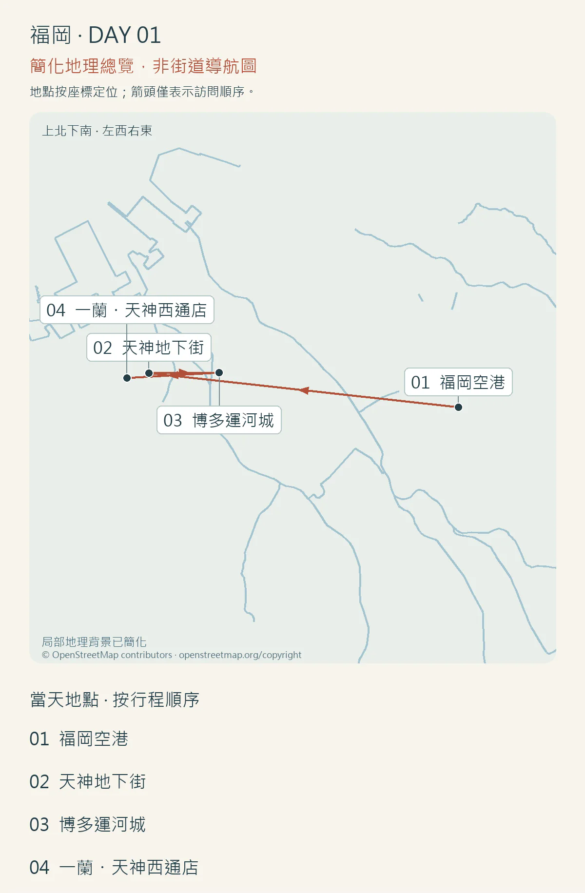
含簡化地理總覽，非街道導航圖；可離線查看；連線只表示行程順序，不是實際導航路線。
睡飽後出發糸島09:00 取車後由藥院前出發，依路況前往櫻井二見浦；此日不另加登山或遠端景點。海邊走到夫妻巖與鳥居周邊即可，風大或步道濕滑便縮短停留。
下午糸島午餐與海岸慢逛把午餐和咖啡甜品留作糸島自由選擇，不先綁定未核實店家；坐下休息後再回福岡市區。若天候不佳，提早返城改逛室內商場，不為拍照勉強停留。
晚上福岡塔與爐端燒約 16:30 前後到福岡塔，以電梯上樓看博多灣與城市暮色，免爬山；再前往今泉百式吃爐端燒，餐後返回藥院前。塔樓最後入場與爐端店訂位時段出發前再核對。
以糸島海岸為白天主軸，傍晚回福岡市區；點位距離為座標直線估算，實際道路和車程以當日導航與路況為準。
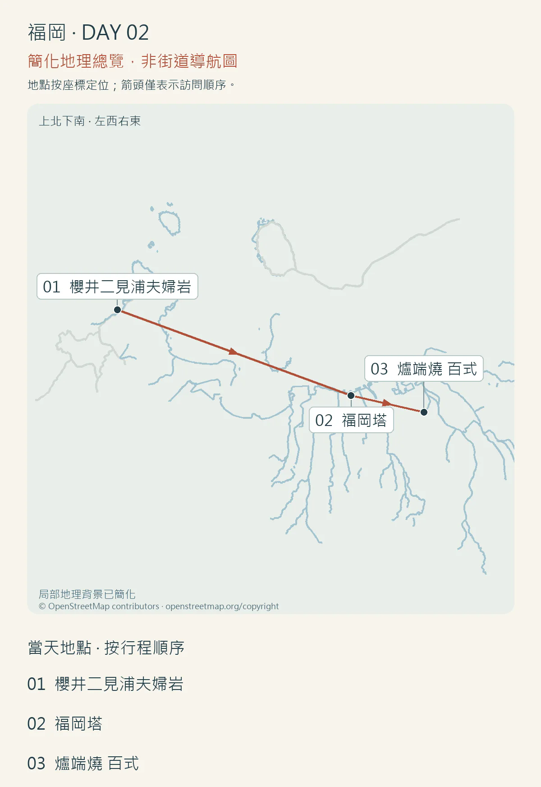
含簡化地理總覽，非街道導航圖；可離線查看；連線只表示行程順序，不是實際導航路線。
提早前往動物公園依使用者已租的七人座自駕，建議約 07:30 從藥院前出發，預留途中休息和交通緩衝；僅此日採早起安排。抵達後以園區主要觀察動線為主，Jungle Bus 票券供應及場次須按官方當日資訊確認。
下午海地獄短停・返福岡動物公園結束後前往別府海地獄，保留一處代表性地熱景觀與休息時間，不跑多個地獄、不加由布院。若園區停留較久或長輩疲累，略過海地獄，直接返福岡。
晚上博多牛腸鍋依回程交通在天神西通安排一藤牛腸鍋，點味噌或醬油鍋與配菜分享。若回城延後，先電話確認訂位，必要時用同區備選餐食，不趕回市區車程。
本日為長距離往返，路線圖只示點位先後與大致地理方向；直線距離不是道路里程或車程，出發、回程與休息均需依即時導航緩衝。
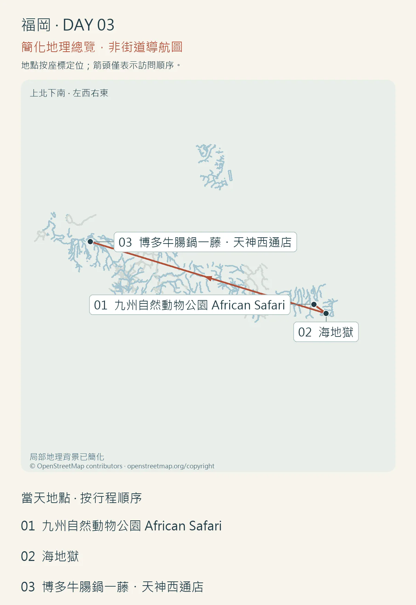
含簡化地理總覽，非街道導航圖；可離線查看；連線只表示行程順序，不是實際導航路線。
秋月慢步・看當年楓況約 10:00 從藥院前出發，抵秋月後沿城下町到黑門與杉之馬場一帶慢走；把午餐與坐下休息算進停留，不追求走遍所有支巷。11 月下旬常見秋色，但實際見頃每年不同。
下午回福岡坐看友泉亭離開秋月後回市區，到友泉亭公園以庭園與室內休息為主；若楓況、天氣或體力不適合，取消第二站、提早回藥院前休息。庭園營業和休園日出發前核對。
晚上預約鱈場蟹晚餐前往札幌蟹本家福岡那之川店，訂位時明確確認「本タラバ蟹」品項、可供應日期、套餐內容與五人座席；蟹種、進貨、菜單與價格可能變動，不以店名推定當日有貨。
秋月為上午主要目的地，之後回福岡市區；地圖直線距離不代表道路里程，秋季人車流與停車等待會拉長實際時間。
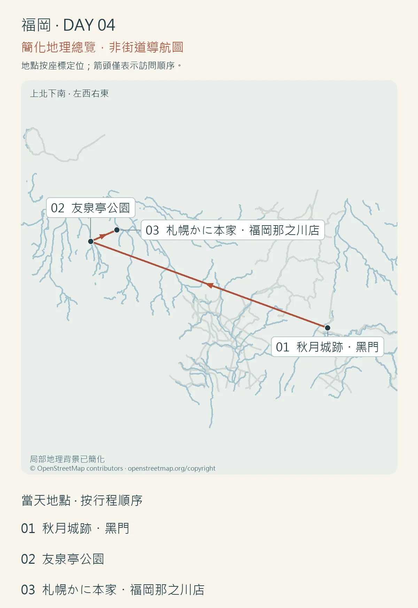
含簡化地理總覽，非街道導航圖；可離線查看；連線只表示行程順序，不是實際導航路線。
還車後的大濠公園按已訂安排 09:00 還七人座，地點與交車流程依租車訂單。市區先走大濠公園湖畔平路，不繞湖全圈；之後到天神吃壽司，視排隊情形彈性調整入店時間。
下午天神短逛・演唱會前提早用餐天神地下街只逛有興趣的區段，約 15:00 前後在大東園安排燒肉作提早主餐，預約時說明晚間演唱會與五人同行。三位年輕人預留移動和入場時間；兩位長輩可先回藥院前休息，依約定於散場後集合。
晚上三人進場・長輩休息再會合三位年輕同行者依票券 17:00–21:00 看演唱會；兩位長輩不必在場館外久等，建議先回住宿休息，再按現場出入口和訊號約定集合位置。演後五人一起返回住宿；散場交通與實際集合點以當晚人流安排。
白天為共同市區路線，17:00 起分流：巨蛋停留只屬三位觀演者，長輩另回住宿休息；圖示僅表示已列地點次序，散場集合另按現場人流。
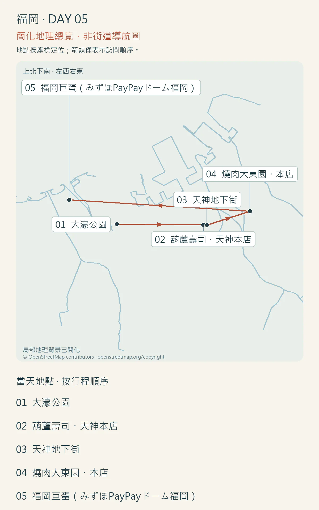
含簡化地理總覽，非街道導航圖；可離線查看；連線只表示行程順序，不是實際導航路線。
兩路分流・門司港與福岡市區兩人按第二段租車訂單於藥院前取車；確切時間與取車地址待確認，建議在福岡市區採購／用餐前先完成取車。三人可睡晚一點，在住宿周邊或天神安排咖啡、甜品及最後採買，不必與自駕組同行。
下午門司港慢走・分組取行李兩人中午到門司港復古區，看港邊建築、車站周邊街景和海峽視野，午餐自選並留足休息；約 15:30–16:00 離開前往北九州機場，以 20:00 前還車為硬截止。三人則回住宿取行李、按航司報到截止與預留緩衝前往福岡機場。
晚上JX841 與 7G801 分別返臺三人 JX841 19:10 自福岡機場起飛，建議依航空公司報到截止時間倒推，目標約 16:00 左右到機場的保守規劃仍須按訂單及航司規則覆核；兩人於北九州機場 20:00 前還車，再搭 23:50 的 7G801。兩班資訊以已提供航班號和時刻為限，其餘待確認。
本日是兩組平行返程：地圖只繪兩人實際自駕的門司港→北九州機場順序；另外三人留在福岡市區，依 JX841 時刻前往福岡機場，兩條路線不合併。直線距離不是道路里程。
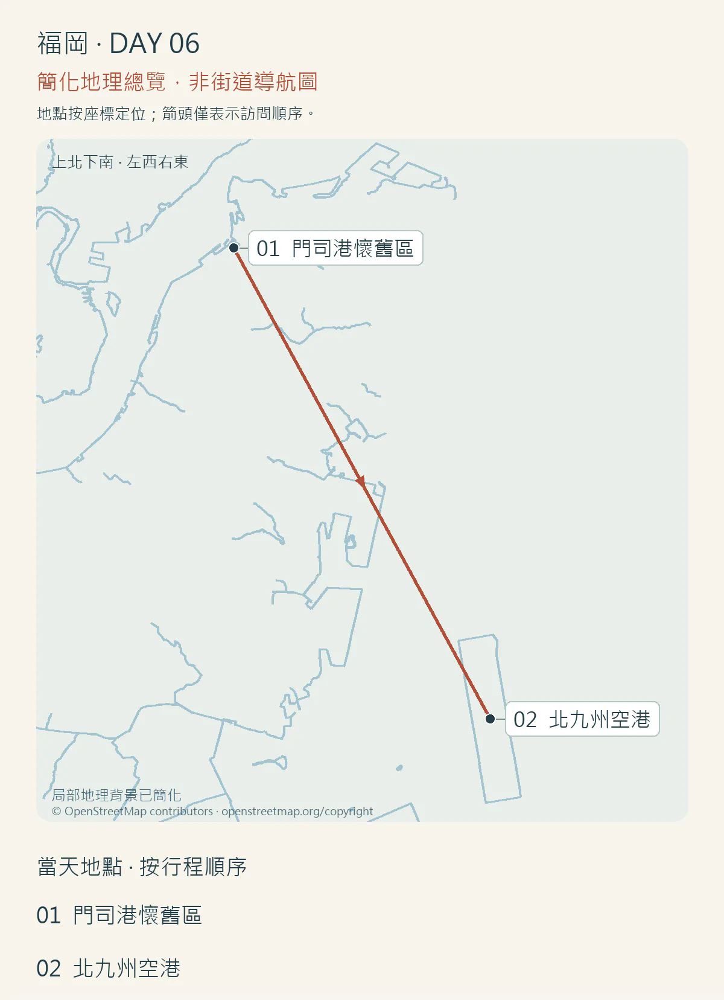
含簡化地理總覽，非街道導航圖；可離線查看；連線只表示行程順序，不是實際導航路線。
SIGHTS
糸島海岸的白色鳥居、海中夫婦岩與海風，是沿岸自駕最有辨識度的一站；停留以看海、拍照和坐下休息為主，不把海岸步道拉長成健行。
開放戶外海岸景點；無固定入場時間，日落與海況隨季節及天氣變化。 · 無固定休園日；餐飲店各自營業。
Google Maps ↗來源 ↗以自家車穿越 Safari Zone 觀察動物棲地為主的自然動物園；園方另有 Jungle Bus 體驗，是否有票與當日受付時段需看官方即時公告。
開放受付時間、閉園時間與 Jungle Bus 班次依季節及當日公告變動；出發前查看官網並以自家車遊覽作保守備案。 · 需以官方營業日曆確認；惡劣天候等可能影響營業。
Google Maps ↗來源 ↗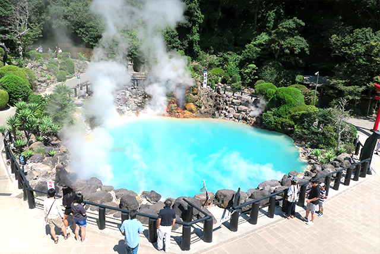
別府地獄巡遊中最適合短停的一站，以鈷藍色熱泉池與蒸氣景觀為主；只挑海地獄，不追求走完多個地獄景點。
開放官方網站目前列示每日 08:00–17:00；出發日仍須核對公告。 · 目前未見固定每週休園資訊；臨時休園依官網公告。
Google Maps ↗來源 ↗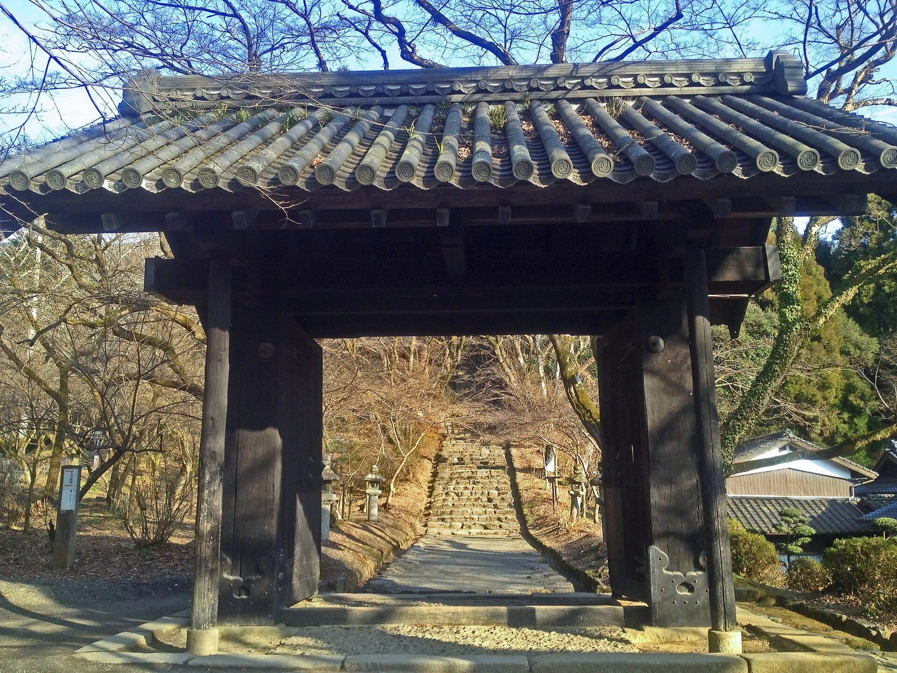
秋月城下町的黑門與石垣、舊街景構成一段短程歷史散步，11 月下旬常是賞楓候選時段，但實際葉況每年不同，不保證見頃。
開放城下町與黑門周邊戶外區域可步行；不是全年開放的室內設施。 · 戶外街區無固定休園日；周邊商店與設施另有營業日。
Google Maps ↗來源 ↗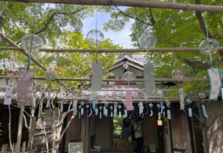
福岡市內的池泉回遊式日式庭園，茶屋可坐下看池景，適合作為秋月天候不佳或長輩想留在市區時的低步行量替代方案。
開放官方列示 09:00–17:00（最晚入園時間依園方公告）。 · 每週一休園；如遇國定假日等例外以官方公告為準。
Google Maps ↗來源 ↗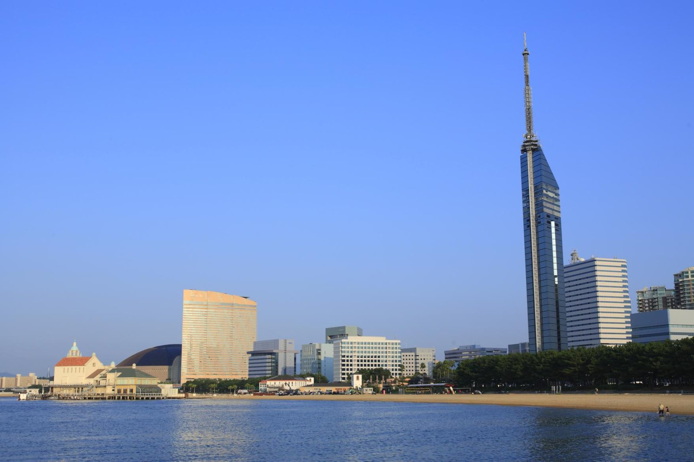
海濱 234 公尺高的城市地標，展望室可俯看博多灣和福岡市區；可作為糸島返市區後的短版夜景選擇，免去橫越至北九州看夜景再折返。
開放官方旅遊頁列示 09:30–22:00，最晚入場 21:30；實際依官網公告。 · 通常有季節性維護日，請以官網公告為準。
Google Maps ↗來源 ↗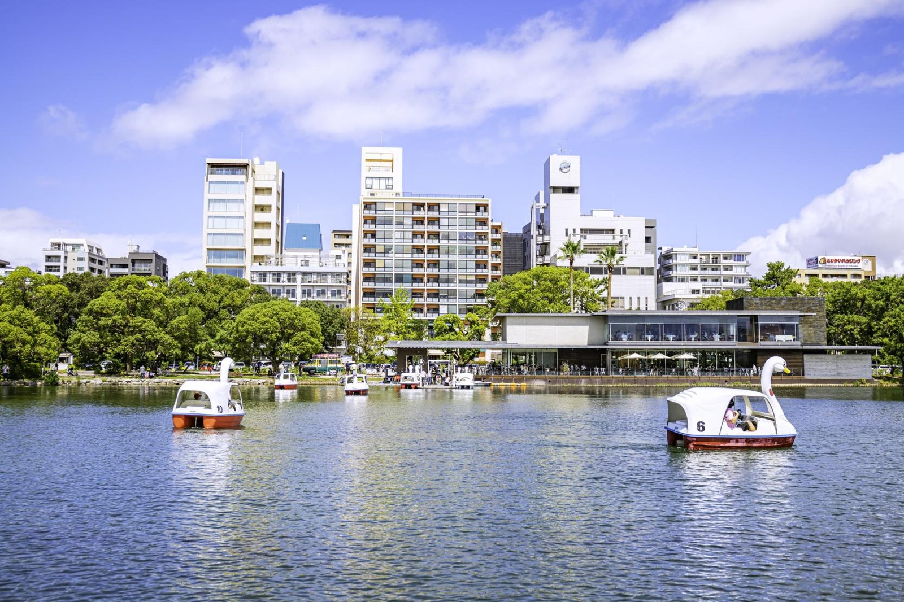
環繞大池的平坦城市公園，可只走入口、浮見堂與湖畔咖啡店之間的一小段；景色開闊，是抵達日或長輩想減少移動時的緩步散策點。
開放公園戶外區域全天可入；日本庭園、咖啡與展館另有各自營業時間。 · 戶外公園無固定休園日；園內設施另有休館日。
Google Maps ↗來源 ↗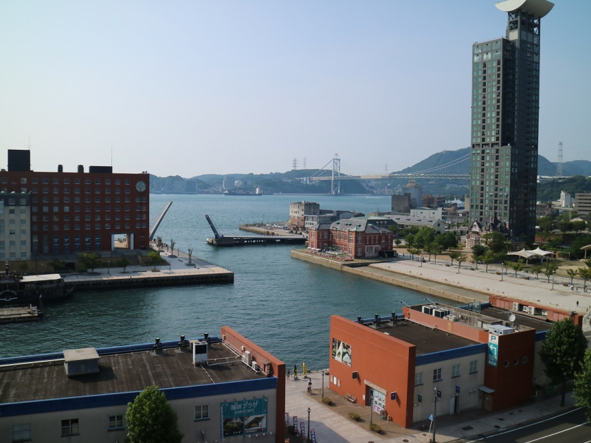
關門海峽旁的港灣歷史街區，紅磚建築、舊門司稅關與海岸散步路線集中，適合離開福岡前選擇一段不需登高的平地街景漫遊。
開放街區戶外區域全天可逛；歷史建築、展館與商店開放時間各異。 · 街區無固定休園日；個別設施各自公告。
Google Maps ↗來源 ↗SHOPPING
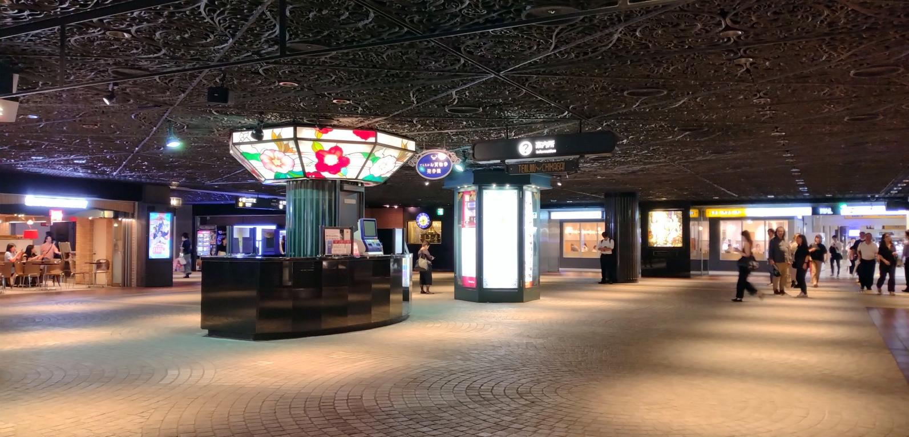
約 590 公尺長的地下購物街，以歐式磚石與連續拱廊形成很有辨識度的逛街空間；約 150 家服飾、配件、雜貨、化妝品與餐飲店相連，遇雨或冷風也好走。
值得逛 / 買日系服飾 · 配件與生活雜貨 · 咖啡甜品與餐飲
先從想逛的品牌與出口挑一段，不必往返走完全長；同一品牌不同樓層或地下鐵出口容易混淆，購物後記下附近出口再會合。開放：官方觀光頁列示一般店鋪 10:00–20:00、餐飲店約至 21:00；各店時間可能不同。 · 各店及公共設施各自公告；出發前查看目標店舖。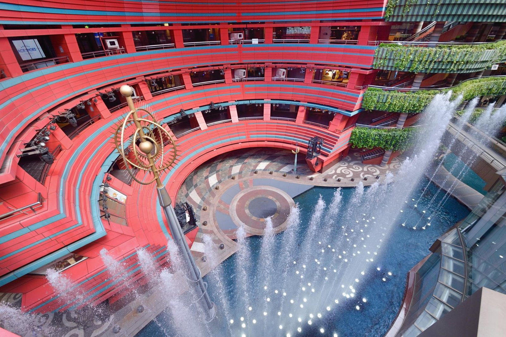
博多川一側的複合商場，以中央運河、弧形建築、噴水表演與拉麵館形成目的地型購物體驗；若購物之外想安排短程室內漫遊，可沿運河中段走一圈並就近休息。
值得逛 / 買九州及日本品牌 · 餐飲與甜品 · 運河中庭景觀
先按樓層導覽鎖定要逛的樓層，將噴水或投影時段視作隨到隨看，不為未核實的演出時間久候；餐廳與店舖時間不同。開放：官方列示商店 10:00–21:00、餐廳 11:00–23:00；部分店舖不同，表演時間以現場公告為準。 · 官方頁列示全年無休；個別店舖另有安排。奶香與奶油風味的白豆沙包餡西式饅頭，是辨識度很高的博多伴手禮；單包方便分送，適合先挑小盒試吃或多人分送盒。
為什么值得買福岡／博多代表性甜點之一，口感柔軟、個別包裝，容易分送。
適合送給想帶經典博多甜點、喜歡奶香白豆沙的人。
哪裡買：明月堂直營店與福岡機場土產店；ANA FESTA 官方頁列有商品，但現場店點與庫存會變動。先選 6 或 9 入小盒，確認有效期限與包裝完整；若在機場購買，依實際搭機航廈及開店時間核對店舖。博多名物辛子明太子可配白飯、茶泡飯或料理；挑 100g 小包較容易控制行李與冷藏時間，選中辛或其他辣度依同行者口味。
為什么值得買讓福岡代表性鹹味特產與甜點伴手禮形成不同選擇；不是常溫保存商品。
適合送給會自行料理或偏愛明太子鹹香辣味、能妥善冷藏的人。
哪裡買：やまや本社工場直売所與品牌官方店；市區土產通路供應依當日為準。購買時核對冷藏／冷凍標示、賞味期限與保冷方式；先查臺灣入境食品規定，不確定能否攜帶就不要帶生鮮明太子。福岡縣八女產深蒸煎茶，茶湯鮮味較明顯、茶葉細碎度也比一般煎茶高；100g 袋裝好攜帶，適合送給喜歡日本茶的人。
為什么值得買直接帶回福岡縣內代表性的八女茶，並能選具體茶款與重量，不只停留在泛稱茶葉。
適合送給偏好在家泡茶、重視產地與茶款資訊的人。
哪裡買：牛島製茶官方網店或其八女市店舖；福岡市內百貨是否上架不固定，不為此特地繞往八女。確認包裝為八女產、茶款與新茶年份；官方頁列未開封期限與保存方式，購買時仍以當批標籤為準並避高溫潮濕。酥脆捲餅裡夾奶油風味內餡，是福岡老牌千鳥屋的代表商品；長條盒適合分享，小盒與不同口味更適合少量試味。
為什么值得買福岡品牌代表性洋菓子，包裝輕、方便分送，也可選福岡限定梅子口味。
適合送給喜歡酥脆餅乾、奶油餡與可愛包裝的人。
哪裡買：福岡空港國內線 2F Tirolian Shop 或千鳥饅頭總本舖官方商店；機場分店資訊與庫存出發前核對。可先挑 4 入小箱或多口味組合；航空站限定口味及售價可能調整，以當日店頭資訊為準。LOCAL EXPERIENCES
這段體驗重點是白色鳥居、海中夫婦岩和海岸光線，不需要登高或走長步道，適合把糸島自駕排成輕鬆的自然景觀日。沿海停留 30–45 分鐘即可，風浪大時從安全平坦處遠望，不下到濕滑巖面。
開放戶外海岸景點，無固定入場時間；日落與海況依季節及天候變化。 · 無固定休園日；海況、天候與周邊店家狀態需當日確認。
園方 Jungle Bus 會由車上近距離觀察動物區域，是這座自駕型自然動物園具辨識度的體驗；但班次和當日售票可能變動，不把乘車當成保證。若無票或長輩想保持舒適，就改以已開放區域的自家車路線觀察，仍保留動物園主行程。
開放售票、受付與發車時間依季節及當日公告；先查看園方公告，未確認前不預設特定班次。 · 園方日曆、天候與現場營運可能影響入園或班次。
以秋月黑門、石垣與城下町街道串成一段平緩慢行，秋葉是加分而非保證；官方觀光資料指出當地紅葉多見於 11 月下旬至 12 月上旬，但每年受天候影響。同行長輩可在老街咖啡店休息，若路面擁擠便只看黑門周邊。
開放城跡與街區為戶外公共空間；店舖營業時間各自不同。 · 街區無固定休園日；店舖與紅葉狀況需出發前確認。
把港邊紅磚建築、舊車站周邊街景和關門海峽視角串成短程城市漫遊，拍照與咖啡休息比追逐多個館舍更適合這趟輕鬆節奏。離開時間需以北九州機場還車與航班緩衝倒推，若停車或路況不理想，縮短港邊停留，不加塞館舍。
開放港邊街區戶外可散步；館舍、商店與咖啡店時間各異。 · 街區無固定休園日；設施依各自公告。
沿市場巷道慢逛魚店、明太子與漬物等博多食材攤位，能看到在地採買日常，也可選少量伴手禮或當場吃的熟食。通道狹窄，不安排長輩連續站立排隊；以平日上午短逛 30–45 分鐘為宜，週日與國定假日休市資訊需再確認。
開放各店時間不同；上午較適合採買，午後可能提早收店。 · 福岡官方觀光資料列示週日及國定假日休市；實際以市場與目標店舖公告為準。
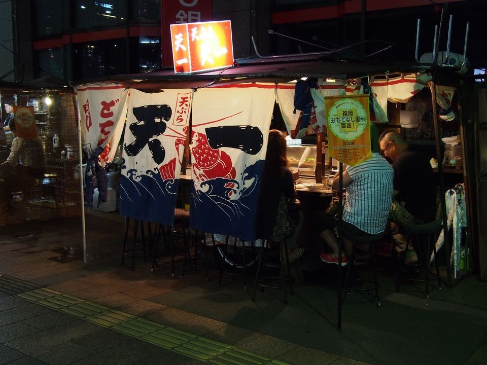
天一是位於天神的單一屋台，能在小型共用吧檯體驗福岡夜攤料理與攤主交流；這種規模與共享座位是屋台文化的特色，適合想要有辨識度的當地體驗。五人同行需先接受座位狹小且可能需分開，當天也可能因天候或店主狀況停攤，因此僅列彈性加選，不作必到承諾。
開放福岡市官方旅遊頁記錄 18:20–翌 01:00；攤位可能因天候或店主狀況不出攤，時間出發前再確認。 · 官方旅遊頁記錄週日與國定假日休；資料日期較早，行前需核對。
FOOD GUIDE
五人會合後用餐；三人 18:00 抵達，留入境與市區移動緩衝，若候位或航班延誤則不趕行程。
五人先確認同桌座席與訂位時段，推薦按當季魚介、蔬菜和炭火菜色分享。
長途自駕回福岡後用餐；訂位時確認五人座位、鍋底和店家可保留時間。
訂位時明確確認本タラバ蟹 11/27 當日供應、菜色、份量、價格與取消規則；不以店名保證蟹種。
五人提早用午餐並先確認候位方式，為午後分流及演唱會留緩衝。
以提早主餐安排於約 15:15，預約時確認週六下午營業時段及五人座位；三位演唱會同行者用餐後前往福岡巨蛋。
餐食涵蓋指定的一蘭拉麵、鱈場蟹、壽司、爐端燒、燒肉及博多牛腸鍋。品質型預算每人 30,000–40,000 元，幣別未提供；此處不拆算整趟總額，餐價、蟹種與套餐均依店家當期公告及預約回覆確認。
福岡常見的西式和菓子，薄皮包奶香白餡，口感細軟；獨立包裝適合旅途中分食或作伴手禮。
辣味醃漬鱈魚卵是博多常見下飯配料，也可見於飯糰、麵包與小菜；不同品牌鹹辣度與冷藏需求不同。
以明太子風味製成的薄脆米餅，鹹香微辣、獨立包裝易分食；部分口味含海鮮或其他調味料。
太宰府參道常見的烤餅，外皮煎烤微脆、內餡多為紅豆；現烤趁熱口感較好，與福岡市中心距離不同於本次主線。
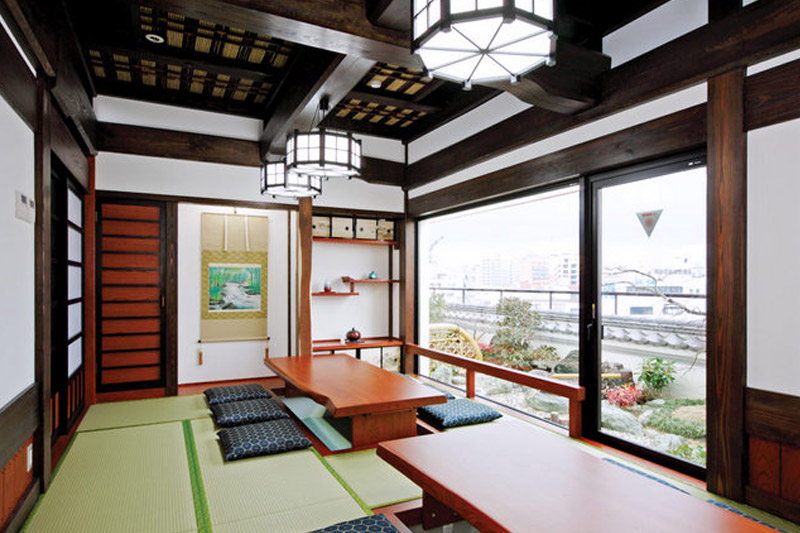
螃蟹料理、日本料理 ·
招牌：本タラバ蟹燒物 · 蟹鍋／蟹涮涮鍋；實際蟹種與菜單需訂位時確認
第 4 天 · 已安排
為什么值得去專門蟹料理店，官方福岡分店頁列出本タラバ蟹等蟹種，店內亦有活蟹水槽與和式座席；符合指定鱈場蟹餐，建議先訂位並直接確認當日能否供應本タラバ及所選套餐。
營業官方分店頁目前列示平日 11:30–15:00、17:00–22:00；週末及假日 11:30–22:00，實際以店方最新公告為準。 · 官方頁列示無固定休店日，年末年始等臨時安排仍需核對。
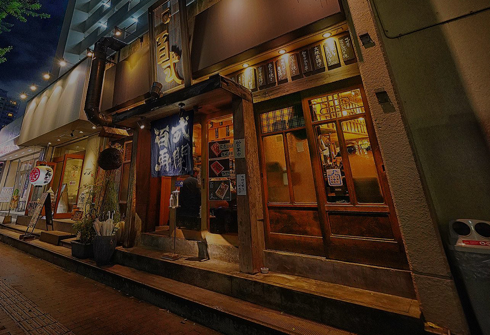
爐端燒、海鮮、季節蔬菜 ·
招牌：炭火燒旬魚 · 爐端燒季節蔬菜；依當週仕入與菜單點選
第 2 天 · 已安排
為什么值得去藥院／今泉一帶的爐端燒店，以當季魚介、蔬菜與炭火即席燒烤呈現福岡晚餐氛圍；店家很受歡迎且座位量有限，五人同行建議先訂位並詢問可否安排同桌。
營業近期店家公開資料記錄約 13:00–23:00；最後入店與訂位時段可能調整，出發前以店家當期公告確認。 · 不定休；以店家最新公告與訂位回覆為準。
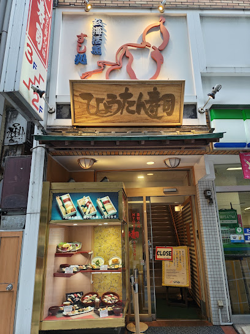
壽司、海鮮料理 ·
招牌：握壽司 · 刺身盛合；海鮮品項依當日進貨與菜單為準
第 5 天 · 已安排
為什么值得去天神老牌壽司店，分店卡與在地餐廳頁均對應天神本店；可點握壽司與季節海鮮，適合作為一餐壽司正餐。五人同行建議避開尖峰或預留排隊時間，點餐前確認當日海鮮與候位方式。
營業午餐時段開始營業；最後點餐、休息時段與當日排隊安排以分店最新公告為準。 · 依店家公告；出發前核對臨時休業。
和牛燒肉、韓國料理 ·
招牌：和牛カルビ燒肉 · 手練冷麵／ユッケジャン湯麵
第 5 天 · 已安排
為什么值得去昭和 45 年創業的博多老店，以和牛燒肉、冷麵與韓式湯品見長；主店位在櫛田神社前／上川端一帶，菜色適合分享，建議安排早晚餐並先訂位，避免演唱會前臨時候位。
營業官方頁目前列示 11:30–23:00；平日午後部分時段可能中休，週末營業方式及最後點單仍以當期公告為準。 · 官方頁未列固定休店日；年節及臨時休業須核對。
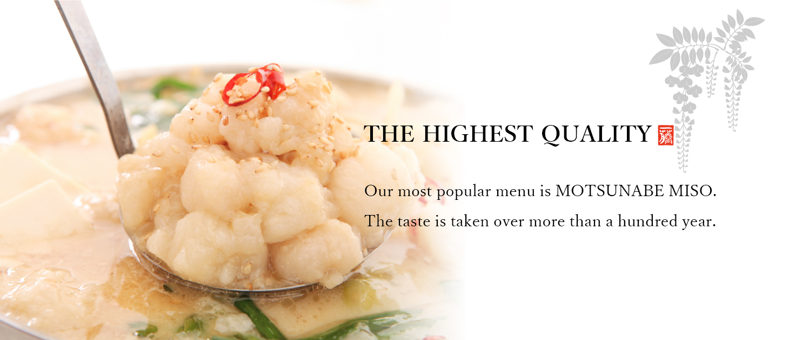
博多牛腸鍋、九州料理 ·
招牌：味噌牛腸鍋 · 醬油牛腸鍋；可加點芝麻鰤魚與馬肉刺身
第 3 天 · 已安排
為什么值得去福岡在地牛腸鍋店，天神西通店有團體座席，適合作為九州行程後的暖鍋晚餐；味噌、醬油與柚子醋口味各有不同，訂位時說明五人同行並詢問座位安排及當期套餐。
營業官方分店頁列有營業資訊但時段可能依門店與季節調整；目前常見為傍晚起至深夜，請直接核對天神西通店當期時間。 · 官方頁記載無固定公休日但一年有少數臨休，年末年始休業日需再次核對。
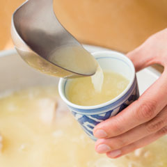
博多水炊、雞肉料理 ·
招牌：博多水炊鍋 · 胡麻鯖／雞肉料理；鍋後可選雜炊或麵作收尾
福岡市內水炊晚餐備選；如選此店請先訂位並確認時段
為什么值得去以九州雞湯慢熬的博多水炊為主，官方品牌首頁直接列出博多本店與藥院店，料理包含胡麻鯖、雞肉料理與雜炊收尾；適合安排在福岡市區的地方料理晚餐，同行長輩可先喝湯再分食配料。
營業博多本店的正式營業時段請依官方門店公告及訂位回覆確認；不以舊版分店網址推定每日時段。 · 依官方最新店舖公告；年節或臨休行前核對。
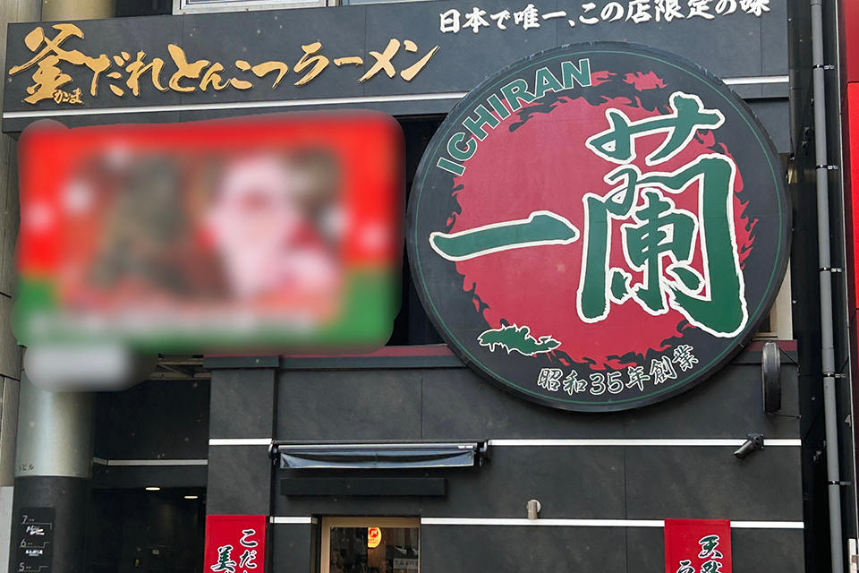
博多豚骨拉麵 ·
招牌：釜だれ豚骨拉麵 · 一蘭豚骨拉麵；配料依各人點單選擇
第 1 天 · 已安排
為什么值得去使用者指定的一蘭博多豚骨拉麵；天神西通店官方頁介紹其釜だれ豚骨特色，抵達日 18:00 才有三位同行者到福岡，可安排五人會合後用餐。座位形式與排隊狀況依現場為準，不把客製拉麵規則當成保證。
營業官方頁目前列示 09:00 至翌日 06:30；店務、排隊和時段可能變動，出發前查看官方公告。 · 目前官方頁列為每日營業；臨時調整以店家公告為準。
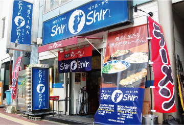
博多豚骨拉麵、餃子 ·
招牌：博多純情豚骨拉麵 · 一口餃子／炒飯
天神市區拉麵候補；本行程已安排一蘭，不必重複吃兩次
為什么值得去福岡起家的博多純情拉麵連鎖，天神本店可作為一蘭以外的拉麵備選；細麵豚骨湯之外也有一口餃子、炒飯等店內料理。舊版天神分店頁目前回傳失效，門店時段需以官方全店日曆和現場公告重新核對。
營業以官方全店營業日曆為準；舊版天神分店頁已失效，行前核對當期營業與最後點單時間。 · 依官方全店行事曆，各店休業日可能不同。
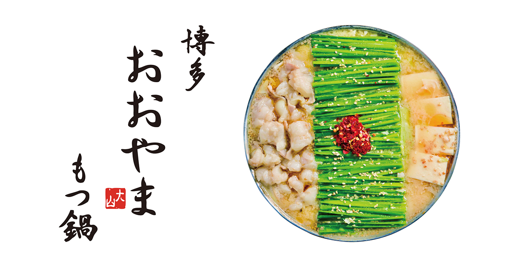
博多牛腸鍋 ·
招牌：味噌牛腸鍋 · 醬油牛腸鍋；鍋料與麵／雜炊收尾依菜單點選
博多站區牛腸鍋備選；與一藤擇一即可
為什么值得去博多站相連商場內的在地牛腸鍋連鎖分店，味噌湯底和牛腸鍋是主要招牌，亦有醬油與水炊風口味；若當日回到博多站一帶，室內用餐與休息較方便，惟本趟主行程已安排一餐牛腸鍋，可作備選而非重複硬排。
營業官方與商場資料目前列示約 11:00–23:00；KITTE 博多營業日與最後點餐依商場公告為準。 · 依 KITTE 博多營業安排。
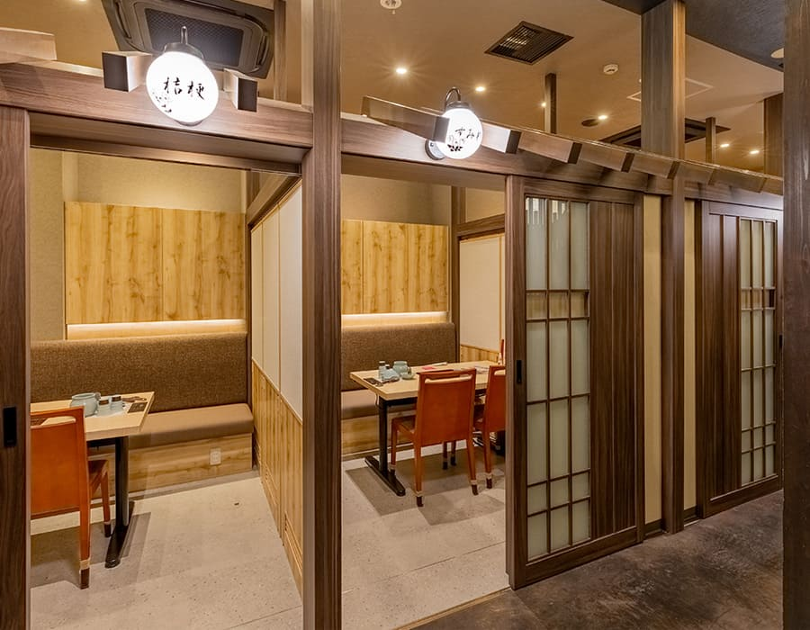
博多水炊、雞肉料理 ·
招牌：華味鳥水炊套餐 · 胡麻鰤魚 · 雞肉明太子；套餐組成按當期菜單為準
福岡水炊連鎖備選；若水炊選華味鳥則不另訂とり田
為什么值得去以華味鳥雞肉與濃厚雞湯水炊聞名的在地連鎖分店，官方店舖頁介紹個室與安靜內裝，適合長輩和同行團體作為水炊備選；菜單有明確套餐，價格與午晚餐供應依日期公告核對。
營業官方頁目前列示平日 17:00–23:00；週末／假日午餐時段及晚餐關店時間不同，依官方店舖公告確認。 · 官方頁列示年末年始等店休；臨時營業調整以預約頁公告為準。
BEFORE DEPARTURE
按必須、建議、隨緣排序，依序準備。
勾選僅表示已處理，不代表商家確認。
核對 11/24–11/29 連住五晚、入住／退房時間、行李寄放和 11/29 取行李安排；完成後可用於路線導航。
確認 11/25 09:00 取車、11/28 09:00 還車的分店地址、駕駛人文件、保險與遲還規則。
取得 11/29 藥院前取車的確切時間／地址及北九州機場還車點、櫃檯關閉時間、燃油與遲還流程；使用者設定 20:00 前還車。
出發前向官方資料與租車公司核實；JAF 指出臺灣發照駕照須與指定日文譯本一同攜帶，其他發照地適用文件不同。
補確認航廈、報到截止、行李限額、機場到達建議與三人 JX841 19:10 的訂位資訊；本手冊只記錄使用者提供的航班號和時間。
確認一蘭、百式、牛腸鍋一藤、葫蘆壽司與大東園的實際分店、營業／最後點餐、候位與訂位狀況；大東園需確認週六 15:15 前後供餐。
預約札幌蟹本家時明確詢問 11/27 本タラバ蟹供應、套餐／單點價、份量、同桌安排與取消規則；收到店家答覆前保持待確認。
查看九州自然動物公園出發當期營業、售票方式、乘車場次和售罄後可用的園區自駕方案；預留回程，不依賴未確認班次。
出發前核實官方開園時間、休園公告和票務；本日若回程緩衝變少，直接取消此站。
11 月下旬為觀察秋色的候選時段，實際見頃取決於當年氣溫與天候；出發前查看福岡官方旅遊資訊和道路狀況。
核對 11/27 當日開園、最後入園及休園公告；若已疲累或秋月停留延長，取消友泉亭並回住宿。
查看最後入場時間、臨時營業變化與天候能見度；海岸日若已疲勞，省略塔樓不影響糸島主行程。
以主辦公告與票券核對開場／散場、入場口、行李限制、拍攝、飲食及散場集合點；長輩不必在外久候。
按當天導航估算門司港到北九州機場的路程，設定比 20:00 更早的離港界線；遇塞車或下雨即縮短散步。
按家庭需要確認保單承保期間、租車自負額與海外聯絡電話；保險範圍以正式條款為準。
LANGUAGE COMPANION
HIGH-FREQUENCY PHRASES
Gonin desu ga, onaji seki ni suwaremasu ka.我們五位，可以坐在同一桌嗎？
Yoyaku shite imasu. 〇〇 no namae desu.我們有預約，姓名是〇〇。
Kyō, hon-tarabagani wa arimasu ka.今天有鱈場蟹嗎？
Kono nabe wa nanin-mae desu ka.這份鍋物是幾人份？
Arerugī ga arimasu. 〇〇 o nuite kudasai.我對〇〇過敏，請不要放〇〇。
Osusume wa nan desu ka.有什麼推薦的菜色？
Kore wa hitori-bun desu ka.這是一人份嗎？
Karasa wa hikaeme ni dekimasu ka.辣度可以調低一點嗎？
Kādo de haraemasu ka.可以用信用卡付款嗎？
Betsubetsu ni kaikei dekimasu ka.可以分開結帳嗎？
〇〇 e wa dō ikeba ii desu ka.請問要怎麼去〇〇？
Kono jūsho wa doko desu ka.請問這個地址在哪裡？
Iriguchi wa dochira desu ka.入口在哪個方向？
Chikaku ni toire wa arimasu ka.附近有洗手間嗎？
Koko de oroshite kudasai.請在這裡讓我們下車。
Yoyaku shita kuruma o uketori ni kimashita.我們來取預約的車。
Henkyaku basho wa kochira de atte imasu ka.還車地點是這裡嗎？
Chikaku no chūshajō o oshiete kudasai.請告訴我附近停車場在哪裡。
Kono dōro wa tsūkō dekimasu ka.這條路可以通行嗎？
Kyūyu shite kara henkyaku shimasu.我們會加油後再還車。
Nimotsu o azukete mo ii desu ka.可以寄放行李嗎？
Chekkuauto-go mo nimotsu o azukeraremasu ka.退房後還可以寄放行李嗎？
Guai ga warui desu. Byōin o sagashite imasu.我身體不舒服，正在找醫院。
Keisatsu o yonde kudasai.請幫我叫警察。
Tasukete kudasai.請幫幫我。
HIGH-FREQUENCY PHRASES
We have a reservation for five.我們預約五位。
Can we sit at the same table?我們可以坐同一桌嗎？
How long is the wait?大約要等多久？
Could you confirm today's opening hours?可以確認今天的營業時間嗎？
We may arrive a little late. Is that okay?我們可能會晚到一點，可以嗎？
Could you recommend a local dish?可以推薦一道當地料理嗎？
Does this contain pork?這道菜含豬肉嗎？
I am allergic to this ingredient.我對這項食材過敏。
Is this portion for one person or for sharing?這是個人份還是分享份？
Could we pay separately?我們可以分開付款嗎？
We are here to pick up our reserved car.我們來取預約的車。
Where should we return the car?我們要在哪裡還車？
Could you enter this address in the navigation system?可以把這個地址輸入導航嗎？
Is this road open to traffic?這條道路目前可以通行嗎？
Please show us the nearest parking lot.請告訴我們最近的停車場。
Can we leave our luggage here?我們可以把行李寄放在這裡嗎？
Can you confirm our check-out time?可以確認退房時間嗎？
We will return to collect our bags before going to the airport.我們前往機場前會回來拿行李。
Here is the address in Japanese.這是日文地址。
Could you call this number for us?可以幫我們打這個電話嗎？
Do you accept this credit card?你們接受這張信用卡嗎？
Can I pay in cash?可以用現金付款嗎？
Could I have a receipt, please?可以給我收據嗎？
I need medical help.我需要醫療協助。
Please call the police or an ambulance.請幫我叫警察或救護車。
LOCAL TRAVEL NOTES
福岡 11 月下旬屬秋末時段，但每日氣溫和降雨無法由季節推定。出發前查看日本氣象廳預報，採可脫穿中層與外套。
海邊體感會受風、雲和浪況影響，停留時不一定比市區舒適。若風勢或降雨使同行者不舒服，提早回福岡並取消戶外拍照。
秋月 11 月下旬可能進入觀葉期，但樹種與當年氣候會造成轉色差異。出發前看福岡官方觀光資訊，別把滿紅當成保證。
糸島日傍晚及巨蛋散場後會在戶外移動，冷暖感受會隨天候變化。把外套放在隨身包，散場集合後直接返回住宿，不延長夜間外出。
福岡屋台座位有限，店家可能有候位、停留或點餐安排，且出攤會受天候影響。先看現場告示並詢問能否容納同行人數，不把未確認的攤位當固定晚餐。
日本市區公共交通常有安靜乘車的習慣，通話和影片聲音容易影響鄰座。搭乘時使用耳機、降低音量，同行者要討論時移到不擋路處。
部分居酒屋會提供 お通し 或依座位收費，但各店規則不同。入座時確認菜單是否列出相關費用與不能吃的配料，再決定是否點單。
秋月、門司港及巨蛋入口都會有其他行人或排隊動線，禁止區域以現場標示為準。先靠邊拍照、不跨護欄、不拍受限制的演唱會內容。
日本對外國駕照的認可文件會按發照地區而不同，不能只帶護照或租車預約。若駕照由臺灣核發，依 JAF 規定攜帶駕照正本與日文譯本，並向租車店複核。
日本道路為靠左行駛、駕駛座在車輛右側，方向與臺灣不同。交車後先確認燈號、雨刷、導航與還車流程，起步前由同車者一起檢查。
糸島、別府、秋月和門司港的道路里程不能由直線圖估算，實際路線依導航與路況。取車時問清 ETC 卡、油料、停車收費方式及夜間還車規則，不預設包含在租金。
11/29 兩組分別前往北九州與福岡機場，不能共用一條導航或同一到達時間。依航空公司報到截止、還車點和當日路況倒推，門司港延誤就立即縮短停留。
福岡往返別府及最後日門司港都可能拉長車程，疲勞會降低判斷和注意力。休息不足時刪掉海地獄或縮短門司港，不以趕景點為由勉強續駕。
糸島海況和岸邊風勢會變化，濕滑巖面及突然湧浪不適合拍照踩近。沿開放步道慢行，不涉水、不攀巖，長輩感到冷或不穩就回車內休息。
別府熱泉周邊蒸氣和高溫水體都應只在開放觀景點欣賞，現場可能有濕滑路面。遵守圍欄與警告標示，同行者不觸碰泉水或越過限制線。
在日本緊急警察電話是 110、消防與救護是 119，JNTO 旅客熱線可提供多語支援。先將電話及住宿地址存入手機，遇急事說明地點、傷者狀況並請人協助通報。
天神和大型商場常見非現金付款，但日本仍有只收現金的小店或設施。進市場、屋台與近郊自駕前保留小額日圓，結帳前看店家接受標誌。
各店的信用卡、電子錢包和交通 IC 卡接受範圍不同，外國手機綁定的支付也可能無法使用。先問是否收自己的卡片，遇讀卡失敗改用現金或另一張卡。
柳橋市場和屋台可能需要較快結帳，部分小店的付款方式與找零能力不同。購買前確認價格、份量及付款方式，避免用未確認的電子支付完成點餐。
免稅服務、最低購買條件與商品包裝會因店家和當期規則而異。結帳時確認是否可辦、需要什麼證件及冷藏品如何保冷，不把退稅或庫存列為保證。